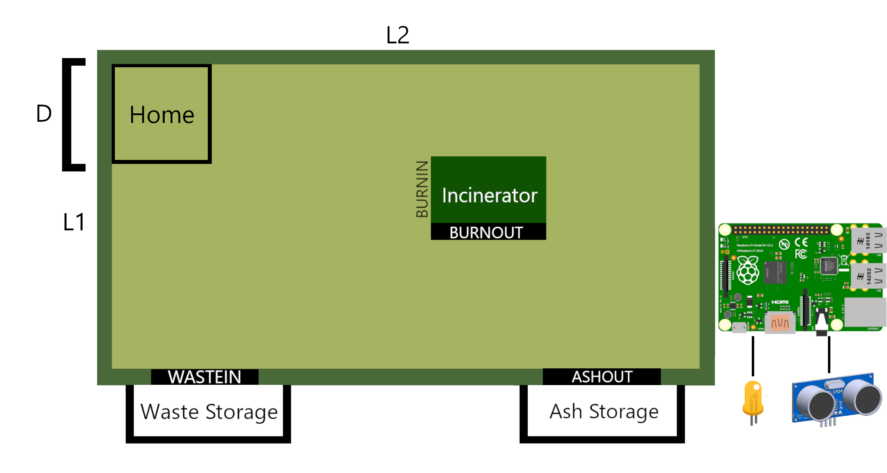
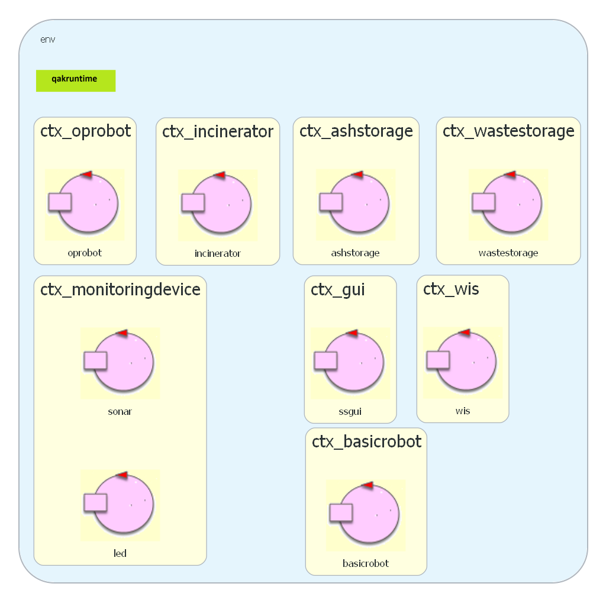

Introduzione
Requisiti
Requisiti del committente.
Analisi dei requisiti
Perchè QAK
Si è osservato che il sistema si compone di un insieme di componenti attivi (attori) all’interno di un
sistema distribuito, che comunicano per portare a termine un obiettivo scambiandosi messaggi.
QAK è un linguaggio che ci offre un livello di astrazione tale
da permettere di specificare le entità come degli attori
(reattivi e proattivi) che comunicano scambiandosi messaggi senza doverci preoccupare dell'implementazione
di
quest’ultimi a basso livello, lasciando quindi al programmatore l’onere di specificare solamente gli
attori
e i messaggi che si scambiano.
WIS
Il
WIS è un attore che svolge i seguenti compiti:
-
Riceve informazioni da una Scale e da un Sonar.
-
Riceve un segnale dall'Inceneritore per comunicare la fine della burning phase.
Il
WIS interagisce con una
GUI, di cui però, in questa fase, non sono speficicati abbastanza
requsiti per definirla.
Lo stesso discorso si può fare per i segnali che riceve da
Scale,
Sonar e
Incinerator.
Infatti, l'informazione trasmessa potrebbe essere modellata come un messaggio ma non si hanno abbastanza
requisiti per poterlo affermare.
Incinerator
L'
inceneritore è descritto da un attore dato che è una entità dislocata rispetto alle altre e che
invia dei messaggi ad altre parti del sistema.
Ha il seguente comportamento:
-
Riceve un segnale di accensione da un'entità esterna tramite wifi o bluetooth
-
Permette al robot di inserire un RP da bruciare, il tempo di bruciatura (in
secondi) è descritto da una variabile BTIME.
-
Alla fine della bruciatura invia un segnale che deve essere recepito dal OpRobot e dal
WIS,
la struttura di questo segnale non è stata specificata dal commitente, quindi verrà decisa
nelle fasi successive di analisi.
Waste Storage
Il
waste storage contiene una bilancia che deve aggiornare il WIS della quantità di RP all'interno dello
storage.
La bilancia potrebbe essere modellata come POJO ma i requisiti non ci forniscono abbastanza informazioni in
merito quindi la sua
implementazione sarà affrontata successivamente.
Monitoring Device
È un nodo computazionale separato, dato che da requisiti viene specificato che deve essere fisicamente
rappresentato da un Raspberry Py.
Inoltre il RaspPy in questione ha due componenti:
Led e
Sonar. Essi sono due dispositivi fisici
che operano su un RaspPy PI e di cui non si può ancora dire nulla sulla loro natura
(se POJO o attori).
Software fornito direttamente dal cliente che utilizzeremo per muovere il robot, per mappare e muoversi da un
punto all’altro della struttura tramite il costruttore di mappe e il pianificatore integrato all’interno del
sw. Questo componente è un attore che girerà su un nodo computazionale separato, questo perchè è stato creato in
questo modo.
Questo software permette di pilotare sia un robot virtuale che un DDR robot fisico semplicemente andando
a cambiare un file di configurazione, implementando un livello di astrazione
Mappa
L'area di servizio è una superfice euclidea piatta di forma rettangolare, di lati L1 ed L2.
- La zona HOME è una area quadrata di lato D, dove D è il diametro del OpRobot
- Le porte WASTEIN, BURNIN, BURNOUT, ASHOUT potrebbero essere rappresentate
come aree in un piano cartesiano. La risoluzione di questo problema verrà analizzato alla prossima fase.

Architettura Logica

Test plans
Come piano di testing si è deciso di vuole simulare il comportamento del robot.
In particolare, un attore esterno andrà ad inserire un RP all'interno del waste storage e darà il segnale di
avvio all'incineritore, il test quindi consiste nell'osservare se
il robot andrà a prelevare l'RP depositato nel
Waste Storage, e completerà l'intera sequenza di
bruciatura e smaltimento del RP, quindi si osserverà se nell'
Ash Storage dopo un periodo di tempo
le ceneri aumenteranno di una quantità pari ad un RP.
Divisione funzionalità
Si è deciso di suddividere il progetto in 3 sprint, secondo un ordine di priorità delle funzionalità:
-
Core Business: Si andrà a realizzare un modello eseguibile che realizza le funzionalità fondamentali
del sistema. In particolare si andranno a realizzare le interazioni tra
WIS-OpRobot-WasteStorage-Incinerator-AshStorage.
-
Monitoring Device: Si realizzerà un'altra parte del sistema, che non è considerata prioritaria come
quella precedente.
-
GUI: Si realizzerà l'interfaccia grafica per mostrare lo stato del sistema.